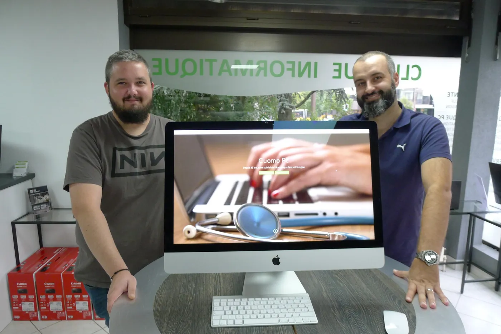
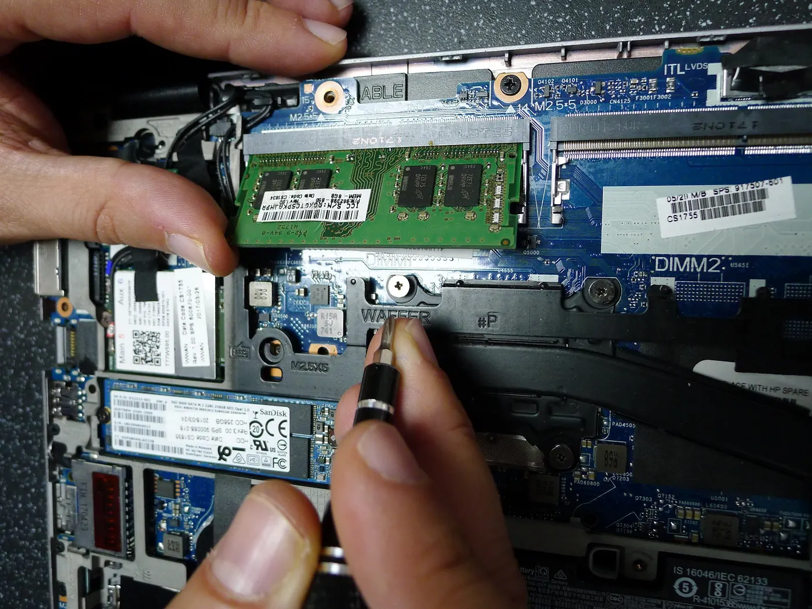
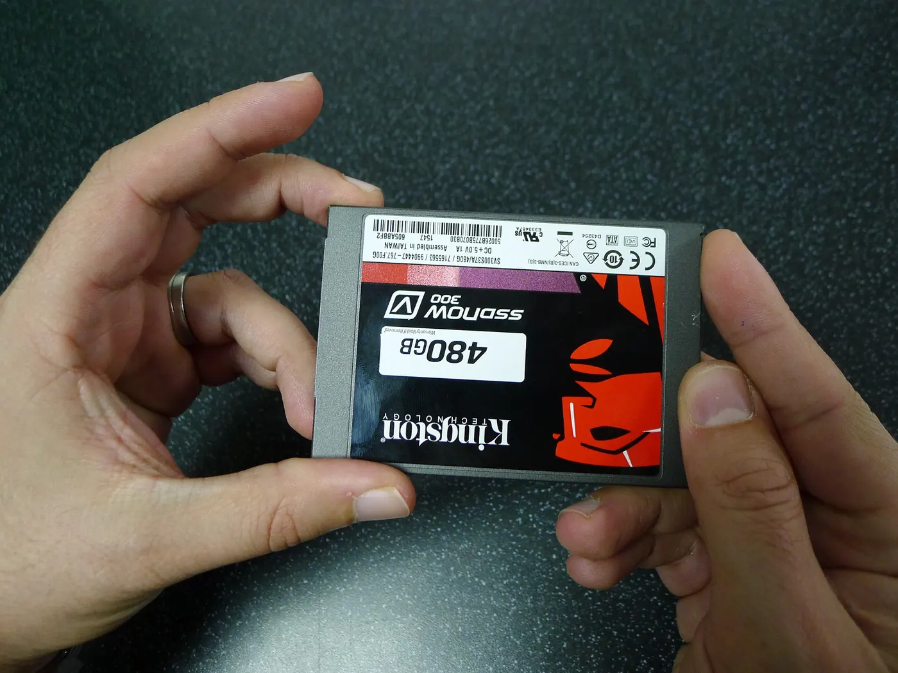
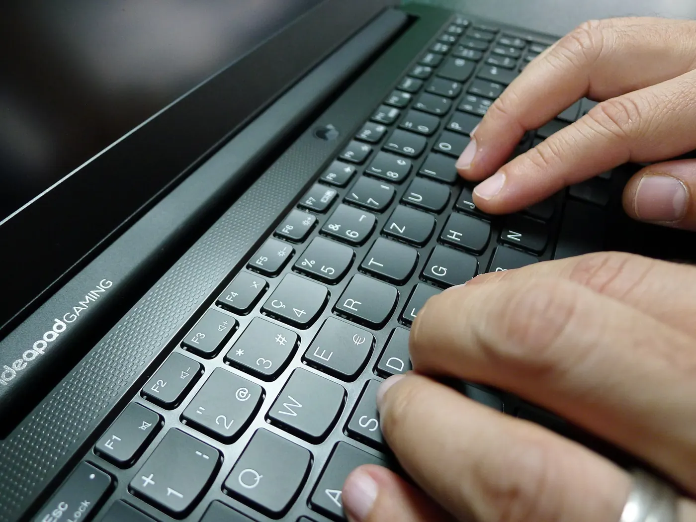

Votre PC ne démarre plus ? Apportez-le à l’atelier.
Réparation, PC sur mesure, récupération de données et support à distance. Une entreprise de famille à Lausanne, depuis 1983.

Ce qu’on fait à l’atelier.
Dépannage et clinique informatique
Votre ordinateur vous crée plus de soucis qu’autre chose ? Prenez rendez-vous : on le répare, on le nettoie de ses virus, ou on le réinstalle. PC, portable ou Mac.
- Réparation à l’atelier, ou directement chez vous
- Suppression des virus et logiciels espions
- Intervention à domicile ou en entreprise, du conseil à la maintenance

PC et serveurs sur mesure
Un peu comme des horlogers, on se définit comme des artisans de l’informatique. Vous choisissez le matériel, on assemble votre tour ou votre serveur selon vos besoins.
Vente de PC neufs et d’occasion, tours et portables. En acquérant un nouvel ordinateur, vous pouvez faire reprendre gratuitement l’ancien et transférer vos données sur la nouvelle machine.

Récupération de données
Disque dur interne ou externe, SSD, clé USB, carte mémoire : photos, lettres, comptabilité. La confidentialité de vos données est garantie. Analyse et devis en général sous 24 heures ouvrables.
Si la récupération n’est pas possible à l’atelier, rien n’est facturé. Au besoin, vous êtes redirigé gratuitement vers un centre spécialisé avec salle blanche.

Support à distance et cloud
Avec le logiciel AnyDesk, on se connecte à votre ordinateur pour régler vos problèmes et le maintenir à jour. Fixez un rendez-vous par téléphone, pour Windows comme pour Mac.
On peut aussi créer votre cloud personnel : vos données sont à vous, et rien qu’à vous.
Des forfaits annoncés d’avance.
Les tarifs publiés par l’atelier, en francs suisses.
Devis ou diagnostic de panne
50.–Apportez votre ordinateur, devis sous 24 à 48 heures. Offert si la réparation est faite chez Cuomo PC dans les 8 jours. (Diagnostic de composants pour PC « gamer » : 150.–.)
Suppression de virus
200.–Forfait. Le travail en atelier prend entre 2 et 5 heures : un forfait revient moins cher qu’un tarif horaire.
Récupération de données
dès 130.–Analyse et devis en général sous 24 heures ouvrables. Rien à payer si rien n’est récupéré.
Support à distance
40.–Prise en charge, puis 2.– par minute entamée.
Rapport pour l’assurance
150.–Rapport pour l’ECA ou votre assurance ménage, pris en charge par la plupart des assurances.
Cinq axes, une mission.
- Sécurité
- Dépannage
- Support
- Connectivité
- Monitoring
Notre devise : à l’écoute du client, à la pointe de la technologie, et dans le respect du budget.
Une affaire de famille.
Présente sur le marché romand depuis 1983, la société Cuomo Computers a été fondée par Luigi Cuomo, puis reprise en 2012 par ses deux fils, Norberto et Marc Cuomo, sous le nom Cuomo PC.
Elle vend, installe, répare, transforme et monte à Lausanne des ordinateurs sur mesure, en fonction des besoins de chaque client. Pour un rendez-vous : téléphone ou courriel.
Adresse
Cuomo PC
Route d’Oron 4
1010 Lausanne
Voir le plan d’accès
Horaires
Lundi au vendredi, 13h30–18h00